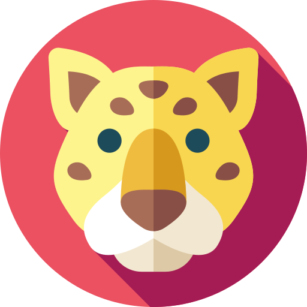

About
Providence, Rhode Island

Computer Science, Earth Environmental and Planetary Sciences @ Brown University
Software Engineer at IGT
Hi, I'm Joe. I am a software engineer and planetary scientist interested in combining my passions of programming
and exploring the cosmos. I orginally hail from the Amazon , where I spent the first 18 years of my life. I now
go to Brown University where I study computer science and EEPS. Although I focus primarily in software/systems
security and data, I have a vast array of different skills and passion including UI/UX design!
I find that my passions of software engineering, planteary sciences and UI/UX can culminate to create a powerful combo. I enjoy that the wide range of my specialities allows me to be very flexible and creative in the work that I do.
If I'm not in the libraries working then you can either find me running, hunting prey or anywhere outdoors!
I find that my passions of software engineering, planteary sciences and UI/UX can culminate to create a powerful combo. I enjoy that the wide range of my specialities allows me to be very flexible and creative in the work that I do.
If I'm not in the libraries working then you can either find me running, hunting prey or anywhere outdoors!